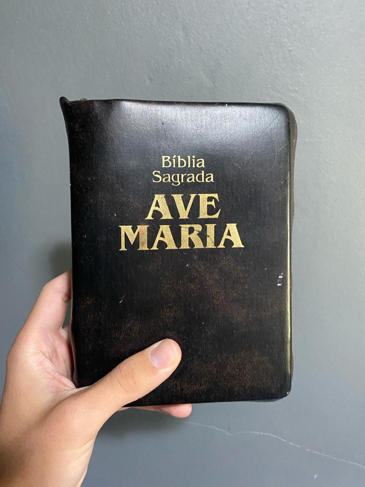
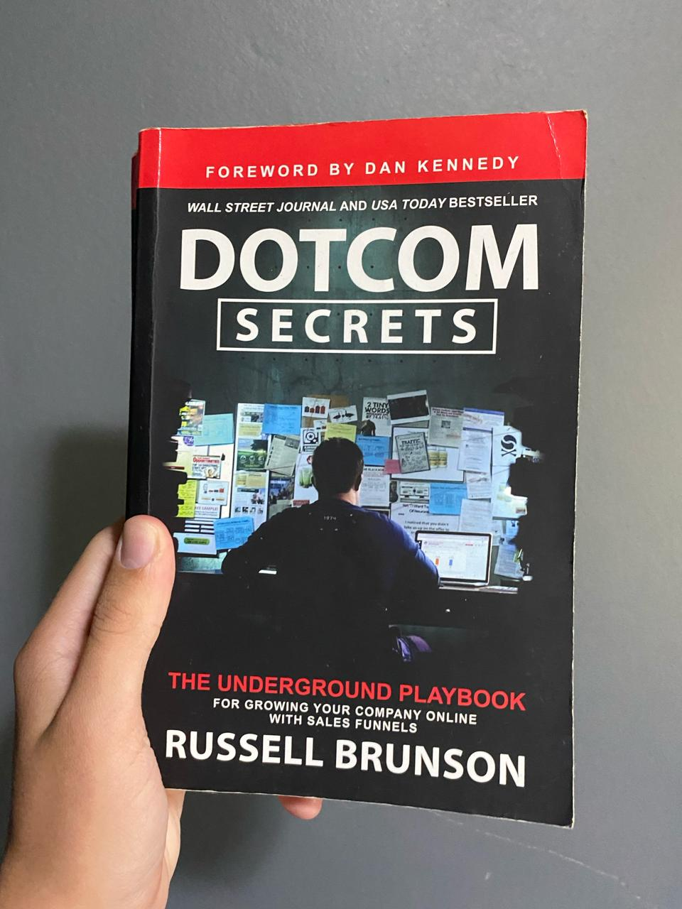
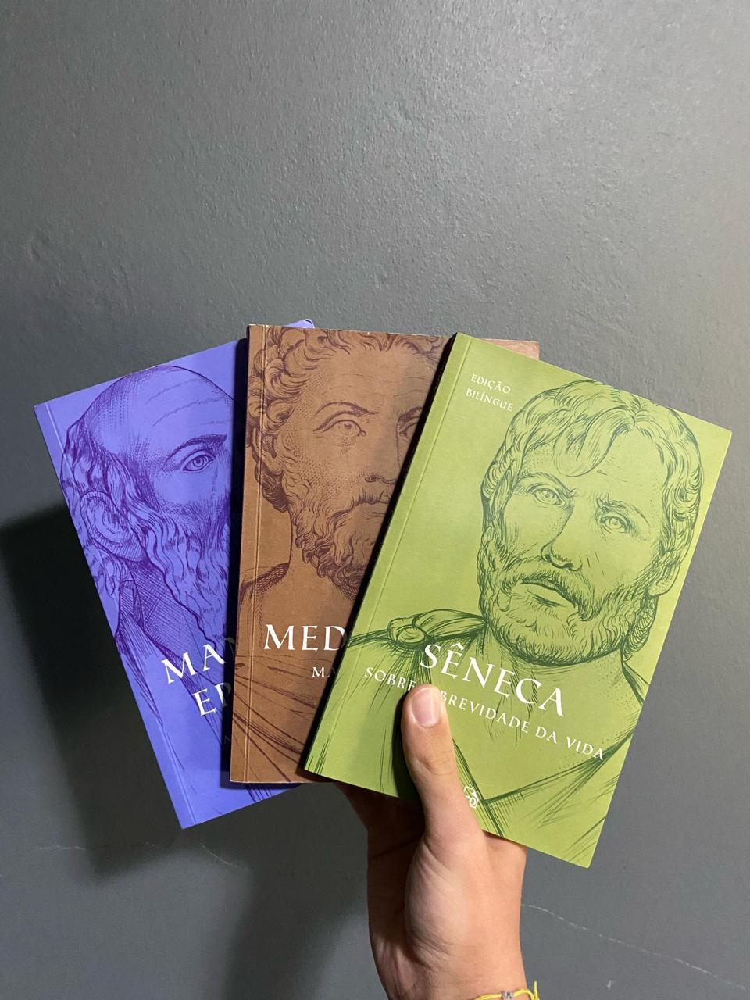

A Bíblia é um livro sagrado que reúne textos religiosos fundamentais para o Cristianismo,
composto por duas partes principais: o Antigo e o Novo Testamento. É uma fonte de orientação espiritual e
moral para milhões de pessoas em todo o mundo, contendo relatos da criação, histórias de figuras bíblicas,
ensinamentos de Jesus Cristo e princípios éticos para a vida cotidiana. Sua influência transcende a esfera religiosa,
sendo também estudada por seu impacto cultural e literário.
Bíblia Sagrada
Como Fazer Amigos e Influenciar Pessoas

"Dotcom Secrets", escrito por Russel Brunson, é um guia essencial para empreendedores digitais em busca de sucesso online.
Publicado em 2015, o livro revela estratégias e táticas eficazes para criar e otimizar funis de vendas na internet.
Brunson compartilha insights valiosos sobre marketing de conteúdo, captação de leads e conversão de clientes,
baseados em sua experiência como fundador da ClickFunnels. Com uma abordagem prática e acessível,
o livro se tornou uma referência no mundo do marketing digital.
Dotcom Secrets

O Box Grandes Mestres do Estoicismo é uma coleção que reúne as obras essenciais dos filósofos estoicos mais renomados,
como Sêneca, Epiteto e Marco Aurélio. Estas obras oferecem insights atemporais sobre como cultivar a serenidade,
enfrentar desafios com resiliência e viver uma vida plena e virtuosa. Com ensinamentos práticos e filosofia aplicável ao cotidiano,
o box se torna uma fonte inspiradora de sabedoria para aqueles que buscam uma vida mais significativa e equilibrada.
Box Grandes Mestres do Estoicismo